6.2 SQL 调优案例
本节主要汇集了一些用户常见的 SQL 优化案例，关于 SQL 调优原理的介绍见第三部分第一章，
案例1 Delete 涉及数据量过大导致 OOM
MySQL [db_stat]> explain delete from t_stat where imp_date<='20200202';
+---------------------+--------------+------+------------------------------------------------------+
| id | count | task | operator info |
+---------------------+--------------+------+------------------------------------------------------+
| TableReader_6 | 220895815.00 | root | data:Selection_5 |
| └─Selection_5 | 220895815.00 | cop | le(db_stat.t_stat.imp_date, "20200202") |
| └─TableScan_4 | 220895815.00 | cop | table:t_stat, range:[-inf,+inf], keep order:false |
+---------------------+--------------+------+------------------------------------------------------+
3 rows in set (0.00 sec)
MySQL [db_stat]> select count(*) from t_stat where imp_date<='20200202';
+-----------+
| count(*) |
+-----------+
| 184340473 |
+-----------+
1 row in set (17.88 sec)
背景
- 大批量清理数据时系统资源消耗高，在 TiDB 节点内存不足时可能导致 OOM
分析
- imp_date 字段上虽然有索引，但是扫描的时间范围过大，无论优化器选择 IndexScan 还是 Table Scan，TiDB 都要向 TiKV Coprocessor 请求读取大量的数据
影响
- TiKV 节点 Coprocessor CPU 使用率快速上涨
- 执行 Delete 操作的 TiDB 节点内存占用快速上涨，因为要将大批量数据加载到 TiDB 内存
建议
- 删除数据时，缩小数据筛选范围，或者加上 limit N 每次删除一批数据
- 建议使用 3.0 版本的 Range 分区表，按照分区快速删除
案例2 执行计划不稳定导致查询延迟增加
MySQL [db_stat]> explain SELECT * FROM `tbl_article_check_result` `t` WHERE (articleid = '20190925A0PYT800') ORDER BY checkTime desc LIMIT 100 ;
+--------------------------+----------+------+-------------------------------------------------------------------------------------------------------------------------------------------------------------------------------------------------------------------------------------------------------------------------------------------------------------------------------------------------------------------------------+
| id | count | task | operator info |
+--------------------------+----------+------+-------------------------------------------------------------------------------------------------------------------------------------------------------------------------------------------------------------------------------------------------------------------------------------------------------------------------------------------------------------------------------+
| Projection_7 | 100.00 | root | db_stat.t.type, db_stat.t.articleid, db_stat.t.docid, db_stat.t.version, db_stat.t.checkid, db_stat.t.checkstatus, db_stat.t.seclevel, db_stat.t.t1checkstatus, db_stat.t.t2checkstatus, db_stat.t.mdaichannel, db_stat.t.mdaisubchannel, db_stat.t.checkuser, db_stat.t.checktime, db_stat.t.addtime, db_stat.t.havegot, db_stat.t.checkcode |
| └─Limit_12 | 100.00 | root | offset:0, count:100 |
| └─IndexLookUp_34 | 100.00 | root | |
| ├─IndexScan_31 | 30755.49 | cop | table:t, index:checkTime, range:[NULL,+inf], keep order:true, desc |
| └─Selection_33 | 100.00 | cop | eq(db_dayu_1.t.articleid, "20190925A0PYT800") |
| └─TableScan_32 | 30755.49 | cop | table:tbl_article_check_result, keep order:false |
+--------------------------+----------+------+-------------------------------------------------------------------------------------------------------------------------------------------------------------------------------------------------------------------------------------------------------------------------------------------------------------------------------------------------------------------------------+
6 rows in set (0.00 sec)
背景
- articleid 和 checkTime 字段上分别建有单列索引，正常情况下走 articleid 上的索引比较快，偶尔执行计划不稳定时走 checkTime 上的索引，导致查询延迟达到分钟级别
分析
- LIMIT 100 限定了获取 100 条记录，如果 checkTime 和 articleid 列之间的相关度不高，在独立性假设失效时，优化器估算走 checkTime 上的索引并满足 articleid 条件时扫描的行数，可能比走 articleid 上的索引扫描的行数更少
影响
- 业务响应延迟不稳定，监控 Duration 偶尔出现抖动
建议
- 手动 analyze table，配合 crontab 定期 analyze，维持统计信息准确度
- 自动 auto analyze，调低 analyze ratio 阈值，提高收集频次，并设置运行时间窗口
- set global tidb_auto_analyze_ratio=0.2;
- set global tidb_auto_analyze_start_time='00:00 +0800';
- set global tidb_auto_analyze_end_time='06:00 +0800';
- 业务修改 SQL ，使用 force index 固定使用 articleid 列上的索引
- 3.0 版本下，业务可以不用修改 SQL，使用 create binding 创建 force index 的绑定 SQL
- 4.0 版本支持 SQL Plan Management（见第三部分 1.3 节），可以避免执行计划不稳定导致的性能下降
案例3 查询字段与值的数据类型不匹配
MySQL [db_stat]> explain select * from t_like_list where person_id=1535538061143263;
+---------------------+------------+------+-----------------------------------------------------------------------------------+
| id | count | task | operator info |
+---------------------+------------+------+-----------------------------------------------------------------------------------+
| Selection_5 | 1430690.40 | root | eq(cast(db_stat.t_like_list.person_id), 1.535538061143263e+15) |
| └─TableReader_7 | 1788363.00 | root | data:TableScan_6 |
| └─TableScan_6 | 1788363.00 | cop | table:t_like_list, range:[-inf,+inf], keep order:false |
+---------------------+------------+------+-----------------------------------------------------------------------------------+
3 rows in set (0.00 sec)
背景
- person_id 列上建有索引且选择性较好，但执行计划没有按预期走 IndexScan
分析
- person_id 是字符串类型，但是存储的值都是数字，业务认为可以直接赋值；而优化器需要在字段上做 cast 类型转换，导致无法使用索引
建议
- where 条件的值加上引号，之后执行计划使用了索引
MySQL [db_stat]> explain select * from table:t_like_list where person_id='1535538061143263'; +-------------------+-------+------+----------------------------------------------------------------------------------------------------------+ | id | count | task | operator info | +-------------------+-------+------+----------------------------------------------------------------------------------------------------------+ | IndexLookUp_10 | 0.00 | root | | | ├─IndexScan_8 | 0.00 | cop | table:t_like_list, index:person_id, range:["1535538061143263","1535538061143263"], keep order:false | | └─TableScan_9 | 0.00 | cop | table:t_like_list, keep order:false | +-------------------+-------+------+----------------------------------------------------------------------------------------------------------+ 3 rows in set (0.00 sec)
案例4 读热点导致 SQL 延迟增加
背景
某个数据量 600G 左右、读多写少的 TiDB 集群，某段时间发现 TiDB 监控的 Query Summary - Duration 指标显著增加，p99 如下图。
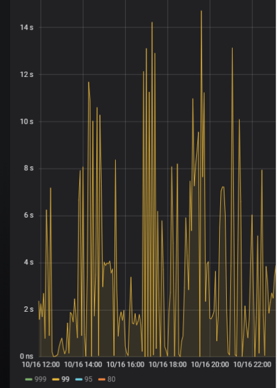
查看 TiDB 监控下的 KV Duration 明显升高，其中 KV Request Duration 999 by store 监控看到多个 TiKV 节点 Duration 均有上涨。
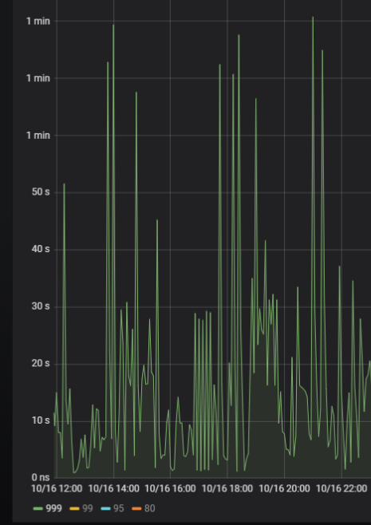
查看 TiKV 监控 Coprocessor Overview
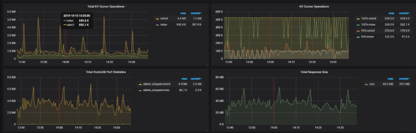
查看监控 Coprocessor CPU
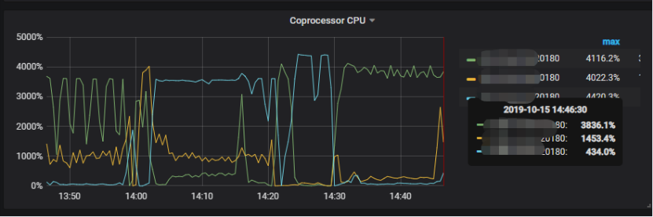
发现 Coprocessor CPU 线程池几乎打满。下面开始分析日志，调查 Duration 和 Coprocessor CPU 升高的原因。
慢查询日志分析
使用 pt-query-digest 工具分析 TiDB 慢查询日志。
./pt-query-digest tidb_slow_query.log > result
分析慢日志解析出来的 TopSQL 发现 Process keys 和 Process time 并不是线性相关，Process keys 数量多的 SQL 的 Process time 处理时间不一定更长，如下面 SQL 的 Process keys 为 22.09M，Process time 为 51s。

下面 SQL 的 Process keys 为 12.68M，但是 Process time 高达 142353s。
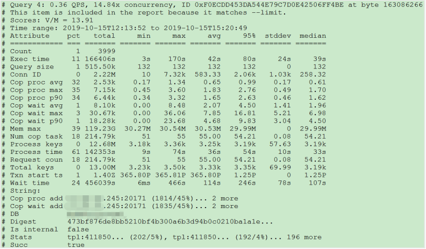
过滤 Process time 较多的 SQL，发现 3 个典型的 slow query，分析具体的执行计划。
- SQL1
select a.a_id, a.b_id,uqm.p_id from a join hsq on a.b_id=hsq.id join uqm on a.a_id=uqm.id;
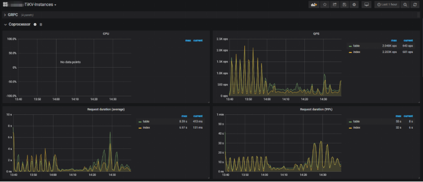
- SQL2
select distinct g.abc, g.def, g.ghi, h.abcd, hi.jq from ggg g left join ggg_host gh on g.id = gh.ggg_id left join host h on gh.a_id = h.id left join a_jq hi on h.id = hi.hid where h.abcd is not null and h.abcd <> '' and hi.jq is not null and hi.jq <> '';
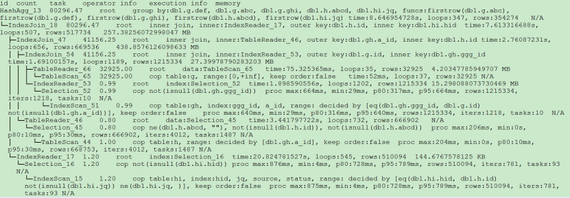
- SQL3
select tb1.mt, tb2.name from tb2 left join tb1 on tb2.mtId=tb1.id where tb2.type=0 and (tb1.mt is not null and tb1.mt != '') and (tb2.name is not null or tb2.name != '');
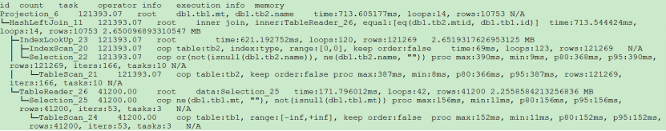
分析执行计划未发现异常，查看相关表的统计信息也都没有过期，继续分析 TiDB 和 TiKV 日志。
常规日志分析
查看 TiKV 日志中标记为 [slow-query] 的日志行中的 region 分布情况。
more tikv.log.2019-10-16-06\:28\:13 |grep slow-query |awk -F ']' '{print $1}' | awk '{print $6}' | sort | uniq -c | sort –n
找到访问频率最大的 3 个 region。
73 29452
140 33324
757 66625
这些 region 的访问次数远远高于其它 region，之后定位这些 region 所属的表名。首先查看 [slow-query] 所在行记录的 table_id 和 start_ts，然后查询 TiDB 日志获取表名，比如 table_id 为 1318，start_ts 为 411837294180565013，使用如下命令过滤，发现是上述慢查询 SQL 涉及的表。
more tidb-2019-10-14T16-40-51.728.log | grep '"/[1318/]"' |grep 411837294180565013
解决
对这些 region 做 split 操作，以 region 66625 为例，命令如下（需要将 x.x.x.x 替换为实际的 pd 地址）。
pd-ctl –u http://x.x.x.x:2379 operator add split-region 66625
操作后查看 PD 日志
[2019/10/16 18:22:56.223 +08:00] [INFO] [operator_controller.go:99] ["operator finish"] [region-id=30796] [operator="\"admin-split-region (kind:admin, region:66625(1668,3), createAt:2019-10-16 18:22:55.888064898 +0800 CST m=+110918.823762963, startAt:2019-10-16 18:22:55.888223469 +0800 CST m=+110918.823921524, currentStep:1, steps:[split region with policy SCAN]) finished\""]
日志显示 region 已经分裂完成，之后查看该 region 相关的 slow-query。
more tikv.log.2019-10-16-06\:28\:13 |grep slow-query | grep 66625
观察一段时间后确认 66625 不再是热点 region，继续处理其它热点 region。所有热点 region 处理完成后，监控 Query Summary - Duration 显著降低。
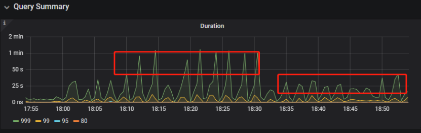
Duration 稳定了保持一段时间，18:55 之后仍然有较高的 Duration 出现。
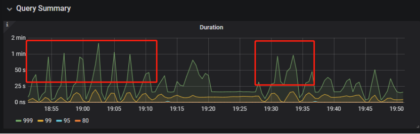
观察压力较重的 tikv，移走热点 region 的 leader。
pd-ctl –u http://x.x.x.x:2379 operator add transfer-leader 1 2 //把 region1 的 leader 调度到 store2
leader 迁走之后，原 TiKV 节点的 Duration 立刻下降，但是迁移到新 TiKV 节点的 Duration 随之上升。

之后多次对热点 region 进行 split 操作，最终 Duration 明显下降并恢复稳定。
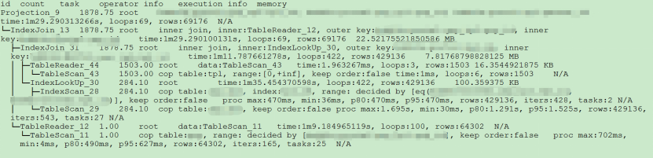
案例总结
对于分布式数据库的读热点问题，有时难以通过优化 SQL 的方式解决，需要分析整个 TiDB 集群的监控和日志来定位原因。严重的读热点可能导致部分 TiKV 达到资源瓶颈，这种短板效应限制了整个集群性能的充分发挥，通过分裂 region 的方式可以将热点 region 分散到更多的 TiKV 节点上，让每个 TiKV 的负载尽可能达到均衡，缓解读热点对 SQL 查询性能的影响。更多热点问题的处理思路可以参考第四部分 7.2 节。
案例5 SQL 执行计划不准
背景
- SQL 执行时间突然变长
分析
- SQL 语句
select count(*)
from tods.bus_jijin_trade_record a, tods.bus_jijin_info b
where a.fund_code=b.fund_code and a.type in ('PURCHASE','APPLY')
and a.status='CANCEL_SUCCESS' and a.pay_confirm_status = 1
and a.cancel_app_no is not null and a.id >= 177045000
and a.updated_at > date_sub(now(), interval 48 hour) ;
执行结果，需要 1 分 3.7s：
mysql> select count(*)
-> from tods.bus_jijin_trade_record a, tods.bus_jijin_info b
-> where a.fund_code=b.fund_code and a.type in ('PURCHASE','APPLY')
-> and a.status='CANCEL_SUCCESS' and a.pay_confirm_status = 1
-> and a.cancel_app_no is not null and a.id >= 177045000
-> and a.updated_at > date_sub(now(), interval 48 hour) ;
+----------+
| count(*) |
+----------+
| 708 |
+----------+
1 row in set (1 min 3.77 sec)
- 索引信息
| 表名 | 数据行 | 索引名 |
|---|---|---|
| bus_jijin_trade_record | 176384036 | PRIMARY KEY (ID) KEY idx_bus_jijin_trade_record_upt (UPDATED_AT) |
| bus_jijin_info | 6442 | PRIMARY KEY (ID) |
- 查看执行计划
mysql> explain
-> select count(*)
-> from tods.bus_jijin_trade_record a, tods.bus_jijin_info b
-> where a.fund_code=b.fund_code and a.type in ('PURCHASE','APPLY')
-> and a.status='CANCEL_SUCCESS' and a.pay_confirm_status = 1
-> and a.cancel_app_no is not null and a.id >= 177045000
-> and a.updated_at > date_sub(now(), interval 48 hour) ;
+----------------------------+--------------+------+-------------------------------------------------------------------------------------------------------------------------------------------------------------------+
| id | count | task | operator info |
+----------------------------+--------------+------+-------------------------------------------------------------------------------------------------------------------------------------------------------------------+
| StreamAgg_13 | 1.00 | root | funcs:count(1) |
| └─HashRightJoin_27 | 421.12 | root | inner join, inner:TableReader_18, equal:[eq(a.fund_code, b.fund_code)] |
| ├─TableReader_18 | 421.12 | root | data:Selection_17 |
| │ └─Selection_17 | 421.12 | cop | eq(a.pay_confirm_status, 1), eq(a.status, "CANCEL_SUCCESS"), gt(a.updated_at, 2020-03-03 22:31:08), in(a.type, "PURCHASE", "APPLY"), not(isnull(a.cancel_app_no)) |
| │ └─TableScan_16 | 145920790.55 | cop | table:a, range:[177045000,+inf], keep order:false |
| └─TableReader_37 | 6442.00 | root | data:TableScan_36 |
| └─TableScan_36 | 6442.00 | cop | table:b, range:[-inf,+inf], keep order:false |
+----------------------------+--------------+------+-------------------------------------------------------------------------------------------------------------------------------------------------------------------+
TableScan_16，TableScan_36：表示在 TiKV 端分别对表 a 和 b 的数据进行扫描，其中 TableScan_16 扫描了 1.46 亿的行数；
Selection_17：表示满足表 a 后面 where 条件的数据；
TableReader_37： 由于表 b 没有独立的附加条件，所以直接将这部分数据返回给 TiDB；
TableReader_18：将各个 coprocessor 满足 a 表条件的结果返回给 TiDB；
HashRightJoin_27：将 TableReader_37 和 TableReader_18 上的结果进行 hash join；
StreamAgg_13：进一步统计所有行数，将数据返回给客户端；
可以看到语句中 a 表(bus_jijin_trade_record)的条件 id >= 177045000，和 updated_at > date_sub(now(), interval 48 hour)上，这两个列分别都有索引，但是 TiDB 还是选择了全表扫描。
按照上面两个条件分别查询数据分区情况
mysql> SELECT COUNT(*) FROM tods.bus_jijin_trade_record WHERE id >= 177045000 ;
+-----------+
| COUNT(*) |
+-----------+
| 145917327 |
+-----------+
1 row in set (16.86 sec)
mysql> SELECT COUNT(*) FROM tods.bus_jijin_trade_record WHERE updated_at > date_sub(now(), interval 48 hour) ;
+-----------+
| COUNT(*) |
+-----------+
| 713682 |
+-----------+
可以看到，表 bus_jijin_trade_record 有 1.7 亿的数据量，应该走 updated_at 字段上的索引。
使用强制 hint 进行执行，6.27 秒就执行完成了，速度从之前 63s 到现在的 6.3s，提升了 10 倍。
mysql> select count(*)
-> from tods.bus_jijin_trade_record a use index(idx_bus_jijin_trade_record_upt), tods.bus_jijin_info b
-> where a.fund_code=b.fund_code and a.type in ('PURCHASE','APPLY')
-> and a.status='CANCEL_SUCCESS' and a.pay_confirm_status = 1
-> and a.cancel_app_no is not null and a.id >= 177045000
-> and a.updated_at > date_sub(now(), interval 48 hour) ;
+----------+
| count(*) |
+----------+
| 709 |
+----------+
1 row in set (6.27 sec)
强制 hint 后的执行计划
mysql> explain
-> select count(*)
-> from tods.bus_jijin_trade_record a use index(idx_bus_jijin_trade_record_upt), tods.bus_jijin_info b
-> where a.fund_code=b.fund_code and a.type in ('PURCHASE','APPLY')
-> and a.status='CANCEL_SUCCESS' and a.pay_confirm_status = 1
-> and a.cancel_app_no is not null and a.id >= 177045000
-> and a.updated_at > date_sub(now(), interval 48 hour) ;
+------------------------------+--------------+------+----------------------------------------------------------------------------------------------------------------------------+
| id | count | task | operator info |
+------------------------------+--------------+------+----------------------------------------------------------------------------------------------------------------------------+
| StreamAgg_13 | 1.00 | root | funcs:count(1) |
| └─HashRightJoin_24 | 421.12 | root | inner join, inner:IndexLookUp_20, equal:[eq(a.fund_code, b.fund_code)] |
| ├─IndexLookUp_20 | 421.12 | root | |
| │ ├─Selection_18 | 146027634.83 | cop | ge(a.id, 177045000) |
| │ │ └─IndexScan_16 | 176388219.00 | cop | table:a, index:UPDATED_AT, range:(2020-03-03 23:05:30,+inf], keep order:false |
| │ └─Selection_19 | 421.12 | cop | eq(a.pay_confirm_status, 1), eq(a.status, "CANCEL_SUCCESS"), in(a.type, "PURCHASE", "APPLY"), not(isnull(a.cancel_app_no)) |
| │ └─TableScan_17 | 146027634.83 | cop | table:bus_jijin_trade_record, keep order:false |
| └─TableReader_31 | 6442.00 | root | data:TableScan_30 |
| └─TableScan_30 | 6442.00 | cop | table:b, range:[-inf,+inf], keep order:false |
+------------------------------+--------------+------+----------------------------------------------------------------------------------------------------------------------------+
使用 hint 后的执行计划，预估 updated_at 上的索引会扫描 176388219，索引选择了全表扫描，可以判定是由于错误的统计信息导致执行计划有问题。
查看表 bus_jijin_trade_record 上的统计信息。
mysql> show stats_meta where table_name like 'bus_jijin_trade_record' and db_name like 'tods';
+---------+------------------------+---------------------+--------------+-----------+
| Db_name | Table_name | Update_time | Modify_count | Row_count |
+---------+------------------------+---------------------+--------------+-----------+
| tods | bus_jijin_trade_record | 2020-03-05 22:04:21 | 10652939 | 176381997 |
+---------+------------------------+---------------------+--------------+-----------+
mysql> show stats_healthy where table_name like 'bus_jijin_trade_record' and db_name like 'tods';
+---------+------------------------+---------+
| Db_name | Table_name | Healthy |
+---------+------------------------+---------+
| tods | bus_jijin_trade_record | 93 |
+---------+------------------------+---------+
根据统计信息，表 bus_jijin_trade_record 有 176381997，修改的行数有 10652939，该表的健康度为：(176381997-10652939)/176381997 *100=93。
解决
- 重新收集统计信息
mysql> set tidb_build_stats_concurrency=10;
Query OK, 0 rows affected (0.00 sec)
#调整收集统计信息的并发度，以便快速对统计信息进行收集
mysql> analyze table tods.bus_jijin_trade_record;
Query OK, 0 rows affected (3 min 48.74 sec)
- 查看没有使用 hint 语句的执行计划
可以看到，收集完统计信息后，现在的执行计划走了索引扫描，与手动添加 hint 的行为一致，且扫描的行数 757743 符合预期。mysql> explain select count(*) -> from tods.bus_jijin_trade_record a, tods.bus_jijin_info b -> where a.fund_code=b.fund_code and a.type in ('PURCHASE','APPLY') -> and a.status='CANCEL_SUCCESS' and a.pay_confirm_status = 1 -> and a.cancel_app_no is not null and a.id >= 177045000 -> and a.updated_at > date_sub(now(), interval 48 hour) ;; +------------------------------+-----------+------+----------------------------------------------------------------------------------------------------------------------------+ | id | count | task | operator info | +------------------------------+-----------+------+----------------------------------------------------------------------------------------------------------------------------+ | StreamAgg_13 | 1.00 | root | funcs:count(1) | | └─HashRightJoin_27 | 1.99 | root | inner join, inner:IndexLookUp_23, equal:[eq(a.fund_code, b.fund_code)] | | ├─IndexLookUp_23 | 1.99 | root | | | │ ├─Selection_21 | 626859.65 | cop | ge(a.id, 177045000) | | │ │ └─IndexScan_19 | 757743.08 | cop | table:a, index:UPDATED_AT, range:(2020-03-03 23:28:14,+inf], keep order:false | | │ └─Selection_22 | 1.99 | cop | eq(a.pay_confirm_status, 1), eq(a.status, "CANCEL_SUCCESS"), in(a.type, "PURCHASE", "APPLY"), not(isnull(a.cancel_app_no)) | | │ └─TableScan_20 | 626859.65 | cop | table:bus_jijin_trade_record, keep order:false | | └─TableReader_37 | 6442.00 | root | data:TableScan_36 | | └─TableScan_36 | 6442.00 | cop | table:b, range:[-inf,+inf], keep order:false | +------------------------------+-----------+------+----------------------------------------------------------------------------------------------------------------------------+ 9 rows in set (0.00 sec)
此时执行时间变为 1.69s ，在执行计划没变的情况下，应该是由于缓存命中率上升带来的提升。
mysql> select count(*)
-> from tods.bus_jijin_trade_record a, tods.bus_jijin_info b
-> where a.fund_code=b.fund_code and a.type in ('PURCHASE','APPLY')
-> and a.status='CANCEL_SUCCESS' and a.pay_confirm_status = 1
-> and a.cancel_app_no is not null and a.id >= 177045000
-> and a.updated_at > date_sub(now(), interval 48 hour) ;
+----------+
| count(*) |
+----------+
| 712 |
+----------+
1 row in set (1.69 sec)
案例总结
可以看出该 SQL 执行效率变差是由于统计信息不准确造成的，在通过收集统计信息之后得到了正确的执行计划。
从最终结果 712 行记录来看，创建联合索引可以更大的降低扫描数据的量，更进一步提升性能。在性能已经满足业务要求情况下，联合索引会有额外的成本，留待以后尝试。